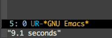

Speeding Up Emacs
Table of Contents
1 Motivation
I've being using Emacs for quite some time now. After picking up several modes and
packages on the way, my init.el grew linearly with the time spent. And so did
my Emacs' startup time. It clocked at around 5 seconds on my SSD equipped Mac and
crawled on the Mac at work, having rotating hard drive, taking whooping
9.1 seconds.

Figure 1: result of (emacs-init-time). Not a very pleasing way to start your day.
2 Attempts
I found several solutions to speed up Emacs start on the web. Since I'm fairly
satisfied with the performance once Emacs starts up, I'm interested only in
improving startup time. To benchmark that, I'm using inbuilt function emacs-init-time
emacs-init-time is an interactive autoloaded compiled Lisp function in `time.el'.
(emacs-init-time)
Return a string giving the duration of the Emacs initialization.
Since memory is cached once we load up an application, subsequent attempts to
benchmark loading time gives inaccurate results. To get around that, I'm using
purge call to flush cached memory.
2.1 Garbage Collection Threshold (gc-cons-threshold)
I found this reddit thread which claims to speedup by increasing the threshold of the bytes consumed before garbage collector is invoked.
gc-cons-threshold is a variable defined in `C source code'. Its value is 800000 Documentation: Number of bytes of consing between garbage collections. Garbage collection can happen automatically once this many bytes have been allocated since the last garbage collection. All data types count. Garbage collection happens automatically only when `eval' is called. By binding this temporarily to a large number, you can effectively prevent garbage collection during a part of the program. See also `gc-cons-percentage'.
I bumped up the value to 108, purged the memory and fired up Emacs and got 8.7 seconds. This was just few milliseconds less than original value (9.1 seconds). This is not very impressive, further I'm not sure how much of this improvement can be attributed to gc tweak and how much to cached memory (I'm not sure which all files are purged).
2.1.1 GC Caveats
As noted by RobThorpe on the thread,
Be aware that the GC pause gets longer as you raise the cons-threshold.
If you raise it a lot it may become irritatingly long and you'll begin to notice it while editing.
Is it okay to play around with this value without knowing what it does for sure?
Is it possible that I'm loading far too many modules which is hitting the threshold
and consequently taking more time to clean up. I don't know, maybe I can visit
this solution again after implementing use-package.
3 TODO use-package
There are two main motivation for me to try use-package:
- It cleans up
init.el: it groups configuration for each mode into blocks. - It gives option to delay package's loading until it is needed.